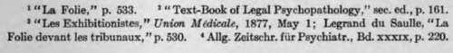

Sexual Crimes Of The Aged And Decrepit
Description
This section is from the book "Human Sexuality", by J. Richardson Parke. Also available from Amazon: Human Sexuality.
Sexual Crimes Of The Aged And Decrepit
In considering apparently lawless manifestât ion* of libido sexualis in the aged and decrepit, attention should be directed rather to the conditions, and ctr-cumslances, attending the act than to the act itself. In senile dementia the diminution of the moral senst will be found to bear an almost certain ratio to the diminution of sexual power; and the publicity, or secrecy, of the act, or the attempt, is always a valuable guide in determining the degree of crime or of disease present. In beginning dementia, or in monomania, the intellectual processes may be sufficiently intact to plan secrecy, or provide avenues of escape; but when the degenerative neurosis is fully established, all prudential motives are lost sight of, and the act is committed with the most utter shameless-ness and abandon. Thus, a gentleman whom I knew, suffering from dementia with an exhibitionist impulse, had to be confined in an asylum by bis friends, for persistently discovering bis penis to ladies in his church pew, But it is well to remember, also, that in such instances, involving total absence of rational restraint, there is no discrimination, nor choice, as to the character of sexual acts committed, rape, masturbation, and even bestiality with geese, ducks and chickens (as shown by Tarnowsky, loe. cu., p. 77), furnishing equal avenues in sexual enjoyment.
I give especial attention to dementia, in its several forms, because, as I am informed, it lies at the root of nearly three-fourths of the serious sexual offences coming before the courts. In some cases there is erotic delirium, and intractable satyriasis, in senile dementia; as in that recorded by Legrand du Saulle,1 where the patient masturbated continuously in public; and in others, homosexual impulses are quite as likely to supervene; but in all cases of advanced dementia there will be observed, not only the element of grossness in the act itself, but, complete shatnelessness and absence of the rational power to plan or observe secrecy.
Another point, not hitherto, I believe, mentioned, must be carefully remembered by the jurist. Complete sexual acts are rarely commuted by demented persons. While there may be, and in fact generally is, greatly increased sexual lust, as Krafft-Ebing states,3 there is, also, absence of well defined sexual purpose, rendering the act purely instinctive; as well as the presence of such a highly strung nervous hyperesthesia as would render the normal copulative act nearly, if not wholly, impossible. My experience with the demented is, that silly lasciviousness of speech, gesture and thought, with, when the act is attempted, a sort of harmless frottage against the person, or clothing, of the object, are far more characteristic than complete penetrative intercourse. If it can be shown, therefore, that the act was complete, perfectly and normally performed, in a case of alleged rape, or that elements of precaution, or premeditation, entered into its commission, a defence of senile dementia may, very properly, be rigidly contested.
Indeed, I think I will be borne out by all jurists of experience in asserting that a great majority of sexual assaults, by those suffering from dementia, will be found to have children and animals for their objects; or to be the mental equivalents of nearly, or wholly, impossible physiological ads; such as those laid down by Lesegue* for instance, in which exhibition of the genitals, playing with the sexual organs of tittle girls,* inciting them to masturbation, or performing mock coitus with them, constituted the chief elements of the crimes. Indeed, as with rape, such acts may, not infrequently, be committed by persons who are wholly a&permaus; notwithstanding the illogical statement of Sir Matthew Hale, that both penetration and emission are necessary for the conviction of one charged with rape (Hale, "Institutes," in, 59, 60).* Every physician knows that rapes arc quite frequently committed by persons to whom emission is a congenital impossibility. If the learned jurist simply made "a mistake," as is now generally conceded, he is amply excused, in the present writer's judgment, by the utterly chaotic condition of legal phraseology, in reference to sexual crimes, presented then, as now, by our statute-books. With this it is my purpose to deal more fully later.

Continue to:
- prev: Early Sex Manifestations Not Necessarily Abnormal
- Table of Contents
- next: Sexual Acts Of Alcoholic Drunkards
Tags
sexuality, reporduction, genitals, love, female, humans, passion